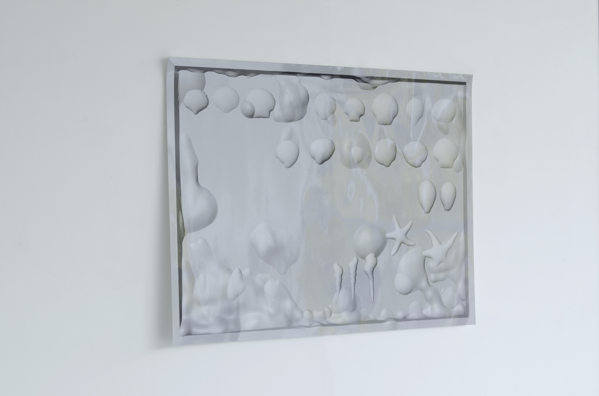
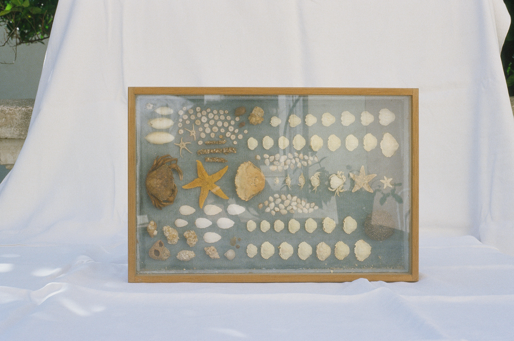

(fig.1)

(fig.2)

Chez moi, il y avait des cadres en bois avec un verre qui protégeait des coquillages ramassés et accrochés, comme on épingle les papillons. J’ai ramassé, sur ce que je pourrais appeler la plage internet, des coquillages venant de tous les horizons, comme si mes entrées dans la barre de recherche me donnait accès à une nouvelle plage chaque fois.